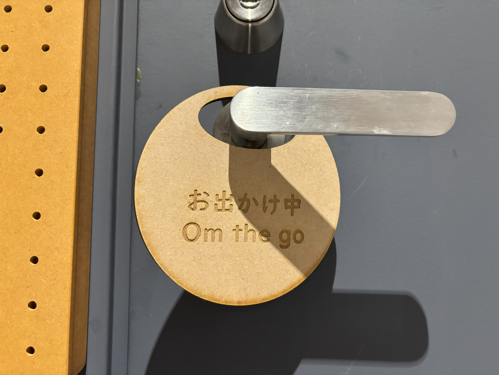

<!DOCTYPE html>
<html long="jp"></html>
<head>
    <title>レーザーカッター</title>
</head>
<body>
    <h1>外出中…</h1>
    <h2>寮で使えるものが欲しい</h2>
    <h3>構図</h3>
    <br>
    <h3>完成品</h3>
    <br>
    <h3>なぜ作ろうと思ったのか</h3>
    <div>寮にいるとき、友達とかが今家にいるのかとか、寝てるのかとか、連絡しないと分からないのが不便で</div>
    <div>部屋のドアのところにつけておけば、わざわざ連絡しなくてもすむから。</div>
    <h3>改善点など</h3>
    <div>裏表で、外出中とお休み中にで、ひっくり返すと変わる感じにして</div>
    <div>色やイラストを付けると、もっと良くなると感じた！</div>
    <div>あと、部屋のドアに自分の名前を英語で作って飾れば、外国人も分かりやすくていいかも！</div>
</body>